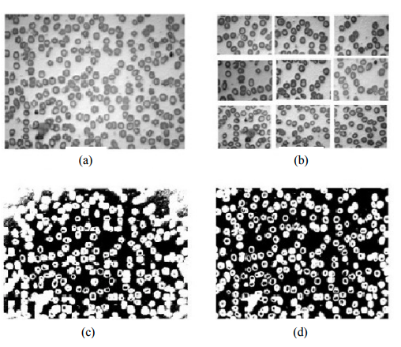

Rumi
I'm a post doctoral researcher at Stanford University, Department of Statistics. I got my PhD, MS and BS in Electrical Engineering, Signal Processing. My research interests include machine learning, compressive sensing and digital signal processing. I love both theoretical and application parts of my favorite research fileds and I'm passionate about learning new skills and problem solving techniques.
Super-Resolution Fluorescence Microscopy in BEAM Imaging
Applied a compressed sensing recovery method based on multiple frame measurements to go beyond diffraction limit (18 nm) in resolving the low-resolution images of microtubules in the wing of D. melanogaster. Brownian Excitation Amplification Microscopy (BEAM) imaging technique is used to achieve randomness and incoherence in the sensing matrix. Implemented a block-diagonal Gaussian sensing matrix to model random changes in the spatial modulation of light due to Brownian motion of Silver nanoparticles in BEAM imaging method. Elevated phase transition boundary promises better recovery by increasing the number of frames. Experiments are implemented both in MATLAB and Python and the models are analyzed in R. Used CLUSTERJOB and ElastiCluster frameworks for parallel programming and submitting tasks to HPC cluster at Stanford (Sherlock) and Google Cloud virtual machine instances.
Available Soon!Compressive Sensing Using Nearly Optimal Number of Measurements
Proposed deterministic binary measurement matrices for compressive sensing based on Array LDPC code parity check matrices, Euler Square matrices and Chinese Remainder query designs with an optimal number of measurements. This design leads to lower complexity, less CPU time and less storage requirement in the recovery of high dimensional sparse signals compared to the conventional Gaussian matrices.
PublicationSignal Recovery and Data Compression in Compressive Sensing
Proposed a novel super-fast non-iterative algorithm for the recovery of high-dimensional sparse signals in the “low complexity” regime. This algorithm is hundreds of times faster compared to basis pursuit using binary measurement matrices and Chirp matrices, and thousands of times faster than using Gaussian matrices.
PublicationSparse Regression Application in Ovarian Cancer
Proposed a new method for the prediction of time to tumor recurrence in Ovarian cancer by applying sparse regression methods such as LASSO, Elastic Net and CLOT (Combined-l1-and l2).
PublicationBlood Disorder Detection Using Deep Convolutional Neural Networks
Automatic detection of ten different cell types in Iron Deficiency Anemia (IDA) by segmentation, feature extraction and classification. SVM, KNN and decision tree classifiers are used to classify various cell types and to distinguish IDA disease from normal blood samples. This method was then improved by applying a 4 layer deep convolutional neural network.
PublicationDesign of a Recommender System Using Spark
Designed a recommender system using Data Bricks (Python) for RetailRocket dataset from Kaggle. The objective of the project is to recommend items to customers based on user’s previous behaviors such as previous purchases, the track of their clicks and the items they have added to their card. Matrix Factorization is used by applying ALS (Alternate Least Square).
Dataset Pagecreated with
Nicepage .